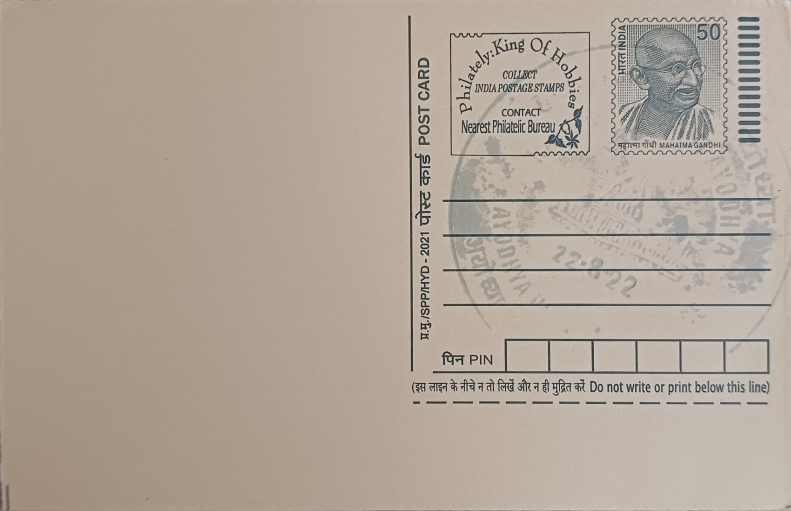

Hanuman Garhi, Ayodhya
हनुमान गढ़ी, अयोध्या


Hanuman Garhi takes its name from the Hindi word garhi, meaning a small fort, a reference to the circular, rampart-like walls that enclose the shrine atop its hillock in Ayodhya. Local tradition holds that the site marks the spot where Hanuman resided and kept watch over the Ram Janmbhoomi after the Ramayana events, acting as the city's divine guardian. Temple lore traces its origins to the 10th century, though the structure as it stands today is considerably later, and the hill itself, known earlier as Hanuman Tila, had long been associated with ascetic worship of Hanuman before any permanent building was raised on it.
The temple is among the most visited and continuously active Hanuman shrines in northern India, and it occupies a central place in the Ayodhya pilgrimage circuit, where devotees customarily visit it before proceeding to the Ram Janmbhoomi temple itself. It is administered by Bairagi mahants of the Ramanandi sampradaya, specifically the Nirvani Akhara, which has controlled the site for over two centuries and has played a prominent role in Ayodhya's religious and legal history, including the long-running Ram Janmabhoomi dispute. This institutional lineage gives Hanuman Garhi a standing that extends beyond devotional practice into the social and political life of the city.
The current temple-fortress is understood to have taken shape through patronage connected to the Nawabs of Awadh, with land at Hanuman Tila granted in the mid-18th century to the ascetic Abhay Ram Das, and construction of the fort-like temple complex advancing under subsequent Nawabi-era funding later in that century. The design follows a four-sided fortress plan with circular bastions at the corners, giving the complex the silhouette of a garhi rather than a conventional temple. The sanctum, housing the principal image of Hanuman along with his mother Anjani, is reached by climbing a flight of 76 stone steps, a climb many pilgrims treat as an act of devotion in itself.
A notable feature of the temple is its cave-like inner sanctum, where the main Hanuman image is kept alongside smaller shrines to other deities within the fortress courtyard, and the walls and corner towers retain the defensive character of the original garhi design even though the complex has never served a military purpose. The site has also figured in the region's more turbulent history, including 19th-century disputes over control of land near Ayodhya's major shrines, episodes that are now part of the historical record cited in later litigation over the city's religious sites. These layers of devotional architecture and contested history give the temple a significance that extends well past its role as a place of daily worship.
Hanuman Garhi today draws dense daily crowds of pilgrims and sees its numbers swell sharply during Diwali and Hanuman Jayanti, when queues for the 76-step climb can stretch for hours. The temple precinct has seen infrastructure upgrades in recent years as part of wider redevelopment works undertaken around Ayodhya's major shrines following the completion of the Ram Mandir nearby, including improved approach roads and crowd-management arrangements for the pilgrim traffic the two sites now share. Administered day to day by the Nirvani Akhara's resident mahants, the temple functions as a working monastic establishment as much as a pilgrimage stop, with its ascetics continuing to live and officiate within the fortress walls much as they have for generations.
| Date of Introduction | December 4, 2021 |
|---|---|
| Address | Senior Postmaster, |
| Ayodhya HO, | |
| Ayodhya (dt.), Uttar Pradesh - 224001. |